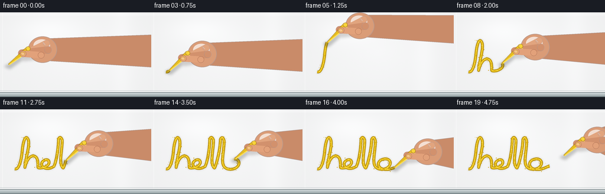
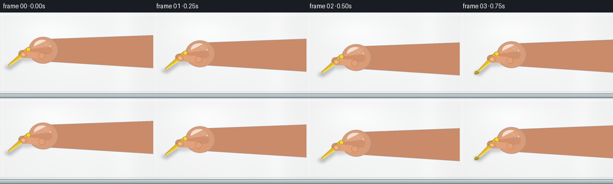

CODING AGENTS AS PIXEL WORLD MODELS
traex/GPT-5.6-Sol · mechanics_0043
点击播放 · 原生 RGB 像素
逐轮保存的候选
回放视频、检查图与代码变化。
每份候选均可单独播放。实际图片检查记录在下方工具轨迹中。
候选 01播放与检查图
点击播放 · 原生 RGB 像素


展开代码变化
--- 上一保存版本
+++ 本次保存版本
@@ -0,0 +1,299 @@
+from pathlib import Path
+import math
+
+import numpy as np
+from PIL import Image, ImageDraw, ImageFilter
+
+import artifact_io
+
+
+W, H, N = 256, 144, 20
+S = 4 # draw large, then antialias down to the requested size
+RNG = np.random.default_rng(4301)
+
+
+def sc_point(p):
+ return (int(round(p[0] * S)), int(round(p[1] * S)))
+
+
+def bezier(p0, p1, p2, p3, count=24):
+ t = np.linspace(0.0, 1.0, count, endpoint=False)[:, None]
+ a, b, c, d = map(lambda x: np.asarray(x, dtype=float), (p0, p1, p2, p3))
+ return ((1-t)**3*a + 3*(1-t)**2*t*b + 3*(1-t)*t**2*c + t**3*d)
+
+
+def make_writing_path():
+ # One connected, naturally flowing lowercase âhelloâ. Keeping it one stroke
+ # makes the contact mechanics legible throughout this short shot.
+ curves = [
+ ((25,101),(31,103),(36,91),(38,67)),
+ ((38,67),(40,50),(44,44),(47,50)),
+ ((47,50),(52,58),(42,86),(42,99)),
+ ((42,99),(43,93),(48,79),(56,79)),
+ ((56,79),(65,79),(64,94),(64,99)),
+ ((64,99),(70,101),(82,97),(83,91)),
+ ((83,91),(84,84),(75,84),(71,90)),
+ ((71,90),(67,97),(78,105),(91,97)),
+ ((91,97),(96,88),(99,62),(99,52)),
+ ((99,52),(99,45),(106,46),(105,57)),
+ ((105,57),(104,74),(99,94),(107,100)),
+ ((107,100),(113,87),(117,62),(117,52)),
+ ((117,52),(118,45),(124,47),(123,59)),
+ ((123,59),(122,75),(117,94),(125,99)),
+ ((125,99),(131,104),(145,102),(148,94)),
+ ((148,94),(151,85),(141,82),(133,86)),
+ ((133,86),(124,91),(128,101),(139,102)),
+ ((139,102),(149,103),(156,98),(162,96)),
+ ]
+ pts = np.concatenate([bezier(*c, count=18) for c in curves] +
+ [np.array([[162., 96.]])], axis=0)
+ # Resample uniformly by arclength so the hand moves at a believable speed.
+ seg = np.linalg.norm(np.diff(pts, axis=0), axis=1)
+ distance = np.r_[0, np.cumsum(seg)]
+ samples = np.linspace(0, distance[-1], 520)
+ return np.column_stack([np.interp(samples, distance, pts[:, i]) for i in range(2)])
+
+
+PATH = make_writing_path()
+
+
+def base_board():
+ h, w = H*S, W*S
+ yy, xx = np.mgrid[0:h, 0:w]
+ x, y = xx/S, yy/S
+ # Cool pearl-white porcelain with an extremely restrained fixed grain.
+ edge = np.sqrt(((x-128)/145)**2 + ((y-66)/95)**2)
+ shine = 7*np.exp(-((x-79)/52)**2 - ((y-30)/24)**2)
+ vertical_reflection = 3.8*np.exp(-((x-206)/18)**2)
+ fine = RNG.normal(0, 0.65, size=(h,w))
+ fine = np.asarray(Image.fromarray(np.uint8(np.clip(fine+128,0,255))).filter(
+ ImageFilter.GaussianBlur(S*0.22)), dtype=float) - 128
+ lum = 246 - 7*np.clip(edge, 0, 1.3) + shine + vertical_reflection + fine*.23
+ arr = np.empty((h,w,3), dtype=np.uint8)
+ arr[...,0] = np.clip(lum+1.5, 0, 255)
+ arr[...,1] = np.clip(lum+2.0, 0, 255)
+ arr[...,2] = np.clip(lum+2.5, 0, 255)
+ im = Image.fromarray(arr, 'RGB')
+ d = ImageDraw.Draw(im, 'RGBA')
+ # Board bevels anchor the white field as a physical porcelain panel.
+ d.line([(0,4*S),(W*S,4*S)], fill=(255,255,255,175), width=S)
+ d.line([(4*S,0),(4*S,134*S)], fill=(255,255,255,100), width=S)
+ d.line([(0,133*S),(W*S,133*S)], fill=(138,153,158,75), width=S)
+ d.rectangle((0,136*S,W*S,H*S), fill=(177,188,190,255))
+ d.line([(0,136*S),(W*S,136*S)], fill=(101,114,118,165), width=S)
+ d.line([(0,138*S),(W*S,138*S)], fill=(237,242,242,180), width=S)
+ d.rectangle((0,142*S,W*S,H*S), fill=(128,141,144,255))
+ return im
+
+
+BOARD = base_board()
+
+
+# Fixed dust positions, revealed as the chalk passes them.
+FLECKS = []
+for _ in range(195):
+ u = float(RNG.random())
+ idx = min(len(PATH)-2, int(u*(len(PATH)-1)))
+ p = PATH[idx]
+ tangent = PATH[idx+1] - PATH[max(0,idx-1)]
+ tangent /= max(np.linalg.norm(tangent), 1e-5)
+ normal = np.array([-tangent[1], tangent[0]])
+ off = float(RNG.normal(0, 2.25))
+ along = float(RNG.normal(0, .5))
+ q = p + normal*off + tangent*along
+ FLECKS.append((u, q, float(RNG.uniform(.20,.72)), int(RNG.integers(45,130))))
+
+
+def draw_chalk_trace(im, progress):
+ if progress <= 0:
+ return
+ count = max(2, min(len(PATH), int(progress*(len(PATH)-1))+1))
+ pts = PATH[:count]
+ # Soft dusty halo trapped against the glossy surface.
+ halo = Image.new('RGBA', im.size, (0,0,0,0))
+ hd = ImageDraw.Draw(halo, 'RGBA')
+ hd.line([sc_point(p) for p in pts], fill=(231,192,30,40), width=6*S,
+ joint='curve')
+ halo = halo.filter(ImageFilter.GaussianBlur(1.35*S))
+ im.alpha_composite(halo)
+
+ d = ImageDraw.Draw(im, 'RGBA')
+ # Dry ochre edge, saturated body, and a thin fresh center.
+ poly = [sc_point(p) for p in pts]
+ d.line(poly, fill=(174,137,12,168), width=5*S, joint='curve')
+ d.line(poly, fill=(226,184,20,228), width=3*S, joint='curve')
+ d.line(poly, fill=(246,211,54,175), width=max(1,S), joint='curve')
+
+ # Grain breaks across the stroke keep it visibly chalk rather than paint.
+ last = count-1
+ for k in range(4, last, 7):
+ p = PATH[k]
+ t = PATH[min(k+2,last)] - PATH[max(0,k-2)]
+ n = np.array([-t[1],t[0]]) / max(np.linalg.norm(t),1e-5)
+ jitter = n * (0.65 * math.sin(k*2.17))
+ q = p + jitter
+ r = (0.35 + 0.28*((k*37)%9)/8)*S
+ d.ellipse((q[0]*S-r,q[1]*S-r,q[0]*S+r,q[1]*S+r),
+ fill=(255,233,117,125))
+ for u, q, rad, alpha in FLECKS:
+ if u <= progress:
+ r = rad*S
+ d.ellipse((q[0]*S-r,q[1]*S-r,q[0]*S+r,q[1]*S+r),
+ fill=(206,161,13,alpha))
+
+
+def capsule(draw, a, b, width, fill, outline=None):
+ a, b = np.asarray(a)*S, np.asarray(b)*S
+ ww = max(1, int(width*S))
+ draw.line([tuple(a),tuple(b)], fill=fill, width=ww)
+ r = ww/2
+ for p in (a,b):
+ draw.ellipse((p[0]-r,p[1]-r,p[0]+r,p[1]+r), fill=fill,
+ outline=outline, width=max(1,S//2) if outline else 1)
+
+
+def draw_hand_and_chalk(im, tip, lift, tangent, frame):
+ # Chalk normally leans up-right while the pressure angle subtly follows the stroke.
+ sway = float(np.clip(tangent[1],-1,1))
+ angle = -0.68 + 0.09*sway
+ u = np.array([math.cos(angle), math.sin(angle)])
+ n = np.array([-u[1],u[0]])
+ contact = np.asarray(tip, float) + np.array([0., -lift])
+ chalk_end = contact + 43*u
+ grip = contact + 31*u
+ palm = chalk_end + np.array([24., 1.])
+
+ # A compact contact shadow explicitly shows the chalk pressing onto porcelain.
+ shadows = Image.new('RGBA', im.size, (0,0,0,0))
+ sd = ImageDraw.Draw(shadows, 'RGBA')
+ sd.ellipse(((contact[0]-6)*S,(contact[1]+1)*S,
+ (contact[0]+7)*S,(contact[1]+5)*S), fill=(54,55,43,90))
+ # Cast shadows from the angled chalk, fingers and wrist.
+ capsule(sd, contact+np.array([2,3]), chalk_end+np.array([3,5]), 8,
+ (51,55,53,72))
+ capsule(sd, grip+np.array([4,5]), palm+np.array([5,7]), 16,
+ (65,56,53,53))
+ shadows = shadows.filter(ImageFilter.GaussianBlur(2.4*S))
+ im.alpha_composite(shadows)
+
+ hand = Image.new('RGBA', im.size, (0,0,0,0))
+ d = ImageDraw.Draw(hand, 'RGBA')
+ # Wrist and palm behind the writing implement.
+ upper = palm + np.array([-2.,-18.])
+ lower = palm + np.array([-1.,19.])
+ wrist_poly = [upper*S, np.array([W+9, max(5,upper[1]-7)])*S,
+ np.array([W+9, min(H-4,lower[1]+12)])*S, lower*S]
+ d.polygon([tuple(p) for p in wrist_poly], fill=(201,139,105,255))
+ d.line([tuple(p) for p in wrist_poly+[wrist_poly[0]]],
+ fill=(128,79,59,145), width=S)
+ d.ellipse(((palm[0]-24)*S,(palm[1]-22)*S,
+ (palm[0]+25)*S,(palm[1]+23)*S),
+ fill=(218,156,119,255), outline=(141,88,65,150), width=S)
+ # Soft warm palm highlight.
+ d.ellipse(((palm[0]-15)*S,(palm[1]-17)*S,
+ (palm[0]+13)*S,(palm[1]+4)*S), fill=(238,180,142,90))
+
+ # Index finger runs along the upper side of the chalk; little fingertip grips it.
+ index_base = palm + np.array([7.,-10.])
+ index_tip = grip + n*4 + u*4
+ capsule(d, index_base, index_tip, 11.5, (225,164,126,255), (151,91,68,145))
+ capsule(d, palm+np.array([10.,1.]), grip-u*1-n*1, 12.5,
+ (210,145,109,255), (140,83,63,135))
+ # Knuckle crease and a small nail on the index finger.
+ crease_a = palm + np.array([1.,-12.])
+ crease_b = palm + np.array([5.,-8.])
+ d.line([sc_point(crease_a),sc_point(crease_b)], fill=(151,92,72,90), width=S)
+ nail_c = index_tip + (index_base-index_tip)*.12
+ d.ellipse(((nail_c[0]-4)*S,(nail_c[1]-3)*S,
+ (nail_c[0]+3)*S,(nail_c[1]+2)*S), fill=(244,193,164,190))
+ im.alpha_composite(hand)
+
+ # Chalk is placed between the fingers, remaining unmistakably visible.
+ implement = Image.new('RGBA', im.size, (0,0,0,0))
+ cd = ImageDraw.Draw(implement, 'RGBA')
+ half = 4.2
+ p0 = contact + u*1.0
+ p1 = chalk_end
+ body = [p0+n*1.2, p0-n*1.2, p1-n*half, p1+n*half]
+ cd.polygon([sc_point(p) for p in body], fill=(232,190,30,255))
+ cd.line([sc_point(p0+n*1.0),sc_point(p1+n*half)],
+ fill=(255,225,79,235), width=2*S)
+ cd.line([sc_point(p0-n*.8),sc_point(p1-n*half)],
+ fill=(166,124,8,180), width=S)
+ # Flat, powdery broken end and worn conical contact tip.
+ cd.ellipse(((p1[0]-4)*S,(p1[1]-4)*S,(p1[0]+4)*S,(p1[1]+4)*S),
+ fill=(247,211,57,255), outline=(175,131,13,180), width=S)
+ cd.polygon([sc_point(p0+n*1.3), sc_point(contact), sc_point(p0-n*1.3)],
+ fill=(201,154,15,255))
+ # Porous chalk pinholes.
+ for frac, off in ((.42,1.3),(.62,-1.5),(.82,.8)):
+ q = contact + u*(43*frac) + n*off
+ rr=.45*S
+ cd.ellipse((q[0]*S-rr,q[1]*S-rr,q[0]*S+rr,q[1]*S+rr),
+ fill=(153,115,9,125))
+ im.alpha_composite(implement)
+
+ # Thumb overlays the stick at the pinch point.
+ fingers = Image.new('RGBA', im.size, (0,0,0,0))
+ fd = ImageDraw.Draw(fingers, 'RGBA')
+ thumb_base = palm + np.array([-2.,10.])
+ thumb_tip = grip + n*1.5
+ capsule(fd, thumb_base, thumb_tip, 11.0, (226,161,122,255), (144,85,64,145))
+ fd.ellipse(((thumb_tip[0]-4.2)*S,(thumb_tip[1]-3.2)*S,
+ (thumb_tip[0]+3.1)*S,(thumb_tip[1]+2.8)*S),
+ fill=(245,192,160,220), outline=(182,119,94,100), width=S)
+ im.alpha_composite(fingers)
+
+ # Fresh powder blooms only while touching the surface.
+ if lift < .7 and frame >= 2:
+ dust = Image.new('RGBA', im.size, (0,0,0,0))
+ dd = ImageDraw.Draw(dust, 'RGBA')
+ for j in range(9):
+ ang = j*2.399 + frame*.27
+ rad = 1.5 + (j%4)*.72
+ q = contact + np.array([math.cos(ang)*rad, math.sin(ang)*rad*.62])
+ rr = (.22 + (j%3)*.14)*S
+ dd.ellipse((q[0]*S-rr,q[1]*S-rr,q[0]*S+rr,q[1]*S+rr),
+ fill=(224,178,17,150-j*7))
+ im.alpha_composite(dust)
+
+
+def position_for_frame(frame):
+ if frame < 2:
+ # Descend into contact before the first mark.
+ tip = PATH[0] + np.array([-11+6*frame, -8+4*frame])
+ return tip, 4.2-2.0*frame, 0.0
+ if frame <= 17:
+ # Ease very slightly at both ends, preserving steady writing in between.
+ t = (frame-2)/15
+ progress = t*t*(3-2*t)
+ idx = min(len(PATH)-2, int(progress*(len(PATH)-1)))
+ return PATH[idx], 0.0, progress
+ # Lift and retract to the right so the completed lettering is revealed.
+ q = frame-17
+ tip = PATH[-1] + np.array([12*q, -6*q])
+ return tip, 2.7*q, 1.0
+
+
+def render_frame(frame):
+ im = BOARD.copy().convert('RGBA')
+ tip, lift, progress = position_for_frame(frame)
+ draw_chalk_trace(im, progress)
+ if frame <= 17:
+ idx = min(len(PATH)-2, max(1,int(progress*(len(PATH)-1))))
+ tang = PATH[idx+1]-PATH[idx-1]
+ else:
+ tang = np.array([1.,-.3])
+ tang = tang/max(np.linalg.norm(tang),1e-6)
+ draw_hand_and_chalk(im, tip, lift, tang, frame)
+ out = im.convert('RGB').resize((W,H), Image.Resampling.LANCZOS)
+ return np.asarray(out, dtype=np.uint8)
+
+
+def main():
+ frames = np.stack([render_frame(i) for i in range(N)], axis=0)
+ artifact_io.save(frames, Path(__file__).resolve().parent)
+
+
+if __name__ == '__main__':
+ main()
可观测工具轨迹
实际执行的命令与返回图片。
命令 1exit 0
/bin/bash -lc "cat prompt.txt && printf '\\n--- GENERATION_RULES.md ---\\n' && cat GENERATION_RULES.md && printf '\\n--- task_spec.json ---\\n' && cat task_spec.json"
命令 2exit 0
/bin/bash -lc "find . -maxdepth 2 -type f -printf '%p\\n' | sort && printf '\\n--- tools ---\\n' && command -v ffmpeg || true && command -v python3 || true && python3 - <<'PY' mods=['PIL','numpy','cv2','imageio'] for m in mods: try: x=__import__(m); print(m, getattr(x,'__version__','ok')) except Exception as e: print(m,'MISSING') PY"
命令 3exit 0
/bin/bash -lc 'cat artifact_io.py'
命令 4exit 0
/bin/bash -lc 'python3 generate.py'
命令 5exit 0
/bin/bash -lc "python3 - <<'PY'
import numpy as np
from PIL import Image
from pathlib import Path
fs=[]
for p in sorted(Path('frames').glob('*.png')):
a=np.asarray(Image.open(p)); fs.append(a)
fs=np.stack(fs)
print('shape',fs.shape,'dtype',fs.dtype,'range',int(fs.min()),int(fs.max()))
for i,a in enumerate(fs):
y=(a[:,:,0]>160)&(a[:,:,0]>a[:,:,1]*1.08)&(a[:,:,1]>90)&(a[:,:,2]<110)
skin=(a[:,:,0]>150)&(a[:,:,0]>a[:,:,1]*1.15)&(a[:,:,1]>a[:,:,2]*1.10)
delta=0 if i==0 else np.abs(a.astype(int)-fs[i-1].astype(int)).mean()
coords=np.argwhere(y)
bb='none' if len(coords)==0 else f'{coords[:,1].min()},{coords[:,0].min()}-{coords[:,1].max()},{coords[:,0].max()}'
print(f'{i:02d} yellow={y.sum():4d} skin={skin.sum():4d} diff={delta:5.2f} ybox={bb}')
PY"命令 6exit 0
/bin/bash -lc "find . -maxdepth 2 -type f -printf '%p %s bytes\\n' | sort | tail -30 && python3 - <<'PY'
import numpy as np, json
z=np.load('pixels.npz'); a=z['pixels']
s=json.load(open('task_spec.json'))
print('pixels tensor:',a.shape,a.dtype)
print('spec:',s)
assert a.shape==(s['height'],s['width'],s['frames'])
assert len(list(__import__('pathlib').Path('frames').glob('*.png')))==20
print('artifact validation: PASS')
PY"命令 7exit 0
/bin/bash -lc "python3 - <<'PY'
import numpy as np
from PIL import Image
from pathlib import Path
F=np.stack([np.asarray(Image.open(p)) for p in sorted(Path('frames').glob('*.png'))])
# Saturated golden pigment, excluding warm skin.
R,G,B=[F[...,i].astype(int) for i in range(3)]
mask=(R>150)&(G>105)&(G*100>R*68)&(B*100<G*63)
for i in range(20):
left=mask[i,:,:190]
print(i,int(left.sum()), 'new_vs_first', int(np.logical_and(left,~mask[0,:,:190]).sum()))
# Verify final gold mark occupies a wide, coherent region on the board.
y,x=np.where(mask[19,:,:190])
print('final pigment extent', (x.min(),y.min(),x.max(),y.max()), 'coverage',len(x))
print('mean consecutive frame MAE',np.abs(np.diff(F.astype(np.int16),axis=0)).mean())
PY"保存候选 1 份；完成命令 7 次；可验证图片返回 0 张。原始 API 响应与完整日志保留在本地。